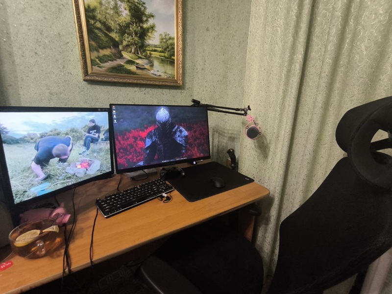
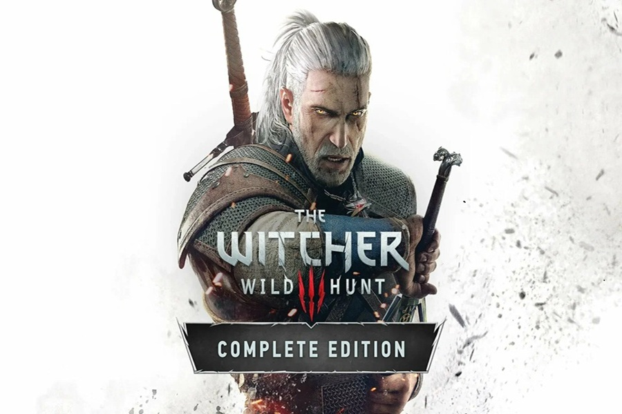
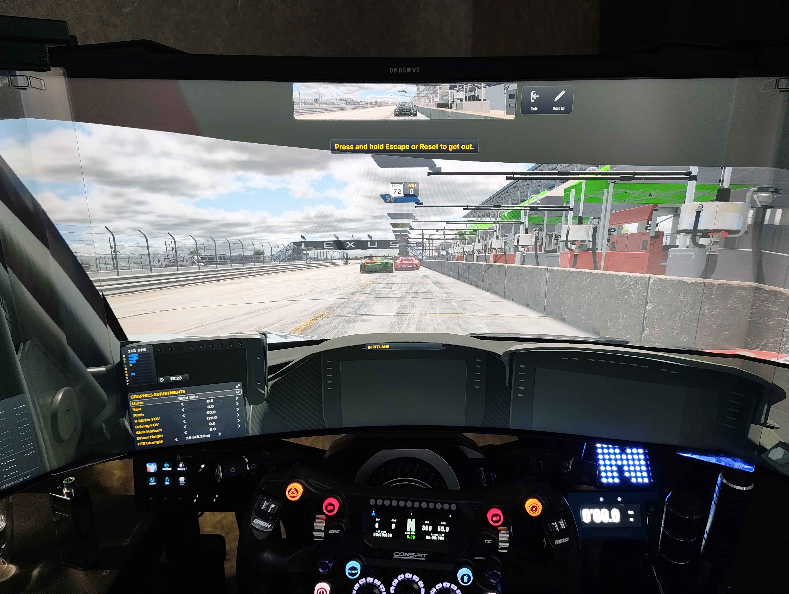
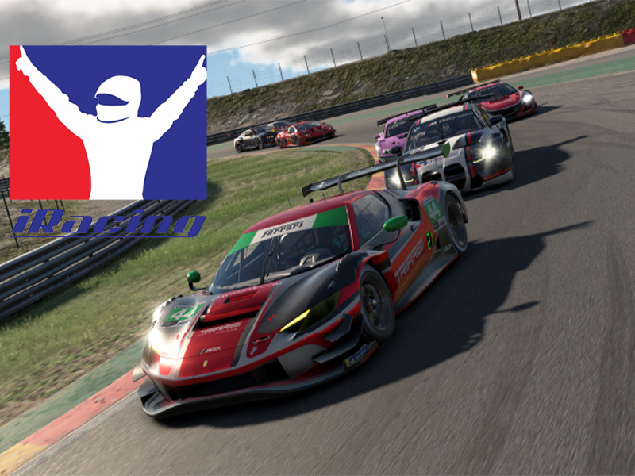
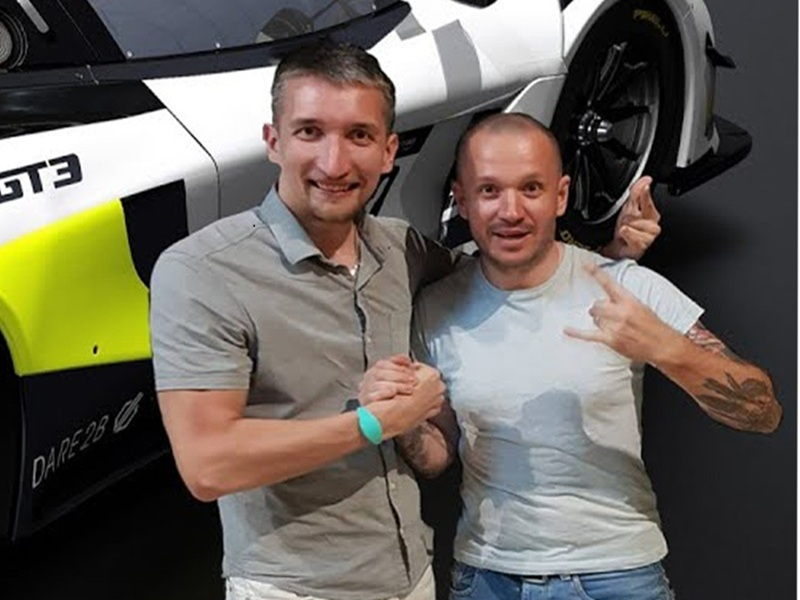
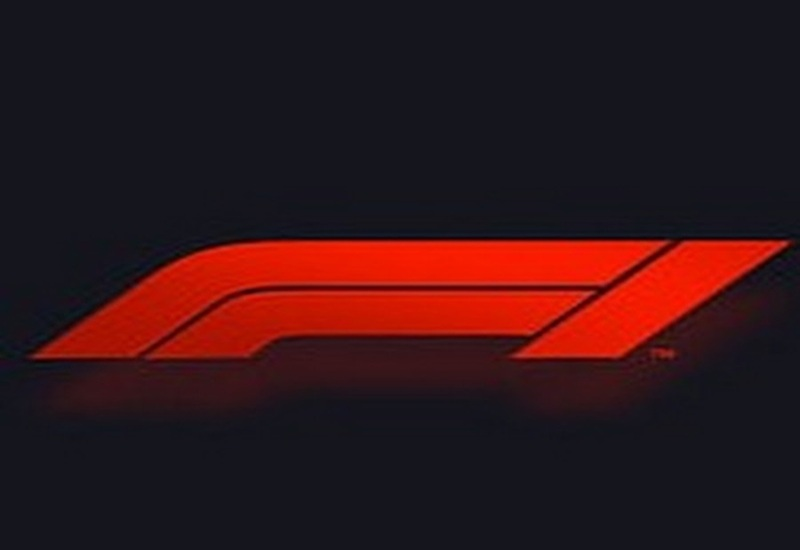
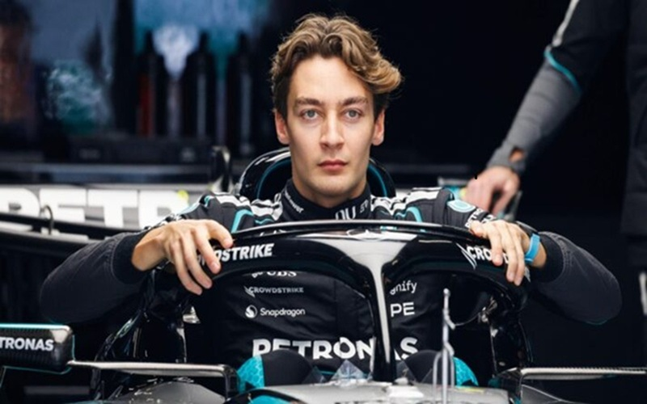
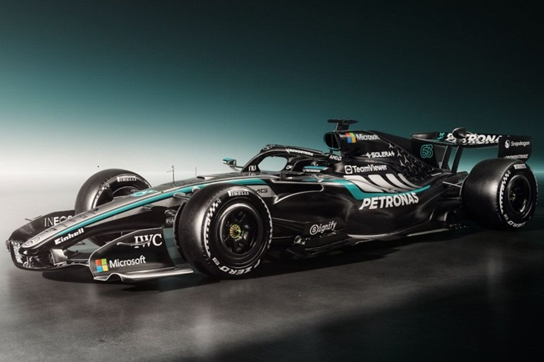
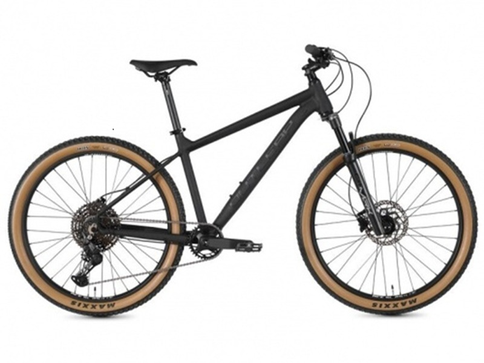
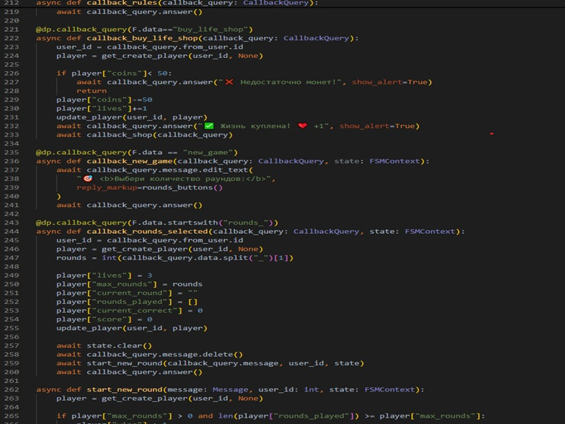

Для меня игры — это скорее способ отдохнуть и переключиться после учёбы. Заходишь в игру и просто выпадаешь из реальности на пару часов. Нравится, когда есть сюжет, атмосфера, когда можно влиять на происходящее. Ну и просто приятно посидеть вечером, расслабиться и не думать ни о чём серьёзном.

Если говорить о самой любимой игре, то это «Ведьмак 3: Дикая Охота». Огромный открытый мир, живые персонажи, нелинейные квесты — всё это создаёт атмосферу, в которую проваливаешься с головой. Прошёл обе сюжетные линии, все дополнения. «Каменные сердца» и «Кровь и вино» — отдельные шедевры, которые могли бы быть самостоятельными играми. Туссент — одно из самых красивых мест, которые я видел в играх. История Геральта закончилась, но эмоции остались навсегда.

Симрейсинг — это не просто игры, а настоящий гоночный симулятор, где важны физика, настройки машины, анализ своих ошибок. Это способ почувствовать себя пилотом, не выходя из дома. Для меня это возможность прожить мечту стать гонщиком, пусть и в виртуальном мире.

Гоняю в Assetto Corsa, LMU, но главное — iRacing. Это самый реалистичный автосимулятор из существующих. Да, графика у него устаревшая. Но iRacing славится физикой, которая максимально приближена к реальности. К сожалению, это симулятор, который вытягивает деньги — подписка, трассы, машины, всё по отдельности. Но взамен ты получаешь доступ к лучшей онлайн-экосистеме и самой реалистичной физике в индустрии.

Два сильнейших пилота, за которыми постоянно слежу. Оба много гоняют в iRacing и LMU, участвуют в топ‑лигах
и регулярно делятся опытом на стримах.
Foton — интересно рассказывает про оборудование.
FatalVaska — силён в командных гонках и эндурансах.
Учусь у него держать темп и тактике.

Формулу-1 смотрю с детства — интерес привил отец. Помню, как по выходным включал гонки, он болел за Ferrari, а я постепенно втянулся. Сейчас это один из главных спортивных интересов.

Болею за Джорджа ещё с 2018 года, когда он выступал в Формуле-2 за команду ART Grand Prix и выиграл чемпионат. Нравится его стиль пилотирования, уверенность и то, как он прогрессирует. В 2026 году он уже лидирует в чемпионате — на его счету победа в Китае и уверенное преимущество над соперниками. Чувствуется, что у него есть все шансы на титул, тем более сейчас у него быстрая и надёжная машина.

За Mercedes болею с 2016 года — тогда начал смотреть Формулу вместе с отцом. В 2026 году Mercedes выглядит очень сильно: новый болид W16 получил революционные изменения в аэродинамике, а на предсезонных тестах в Абу-Даби команда первой испытала активное переднее антикрыло. Сезон начали мощно: Рассел выиграл спринт в Китае, а в Австралии оба пилота финишировали на подиуме. Сейчас команда лидирует в Кубке конструкторов, и, надеюсь, это только начало.

У меня Outleap RIOT EXPERT 29 — надёжный хардтейл, на котором я катаюсь по лесным тропам и по городу. Велосипед позволяет чувствовать себя уверенно на бездорожье, неплохо прощает ошибки и радует надёжностью. Люблю выбираться за город, особенно в тёплое время года — это способ отдохнуть от монитора и переключиться.
Космос — это то, что затягивает, если начать вникать. Мне кажется, будущее космонавтики за многоразовыми носителями и частными компаниями вроде SpaceX. То, что они делают с Falcon 9 и Starship, впечатляет. Слежу за новостями про запуски, планы по высадке на Луну и Марс. Было бы интересно увидеть, как космонавтика развивается дальше.

Программирование для меня — это способ создавать что‑то прикольное. Нравится копаться в задачах, которые требуют логики. Python сейчас основное направление: боты, скрипты, автоматизация. Как работа, программирование меня не привлекает, а как хобби — интересно. В будущем хочу лучше разобраться в сетях и безопасности, но пока просто получаю удовольствие от процесса и учусь на своих ошибках.
© 2026